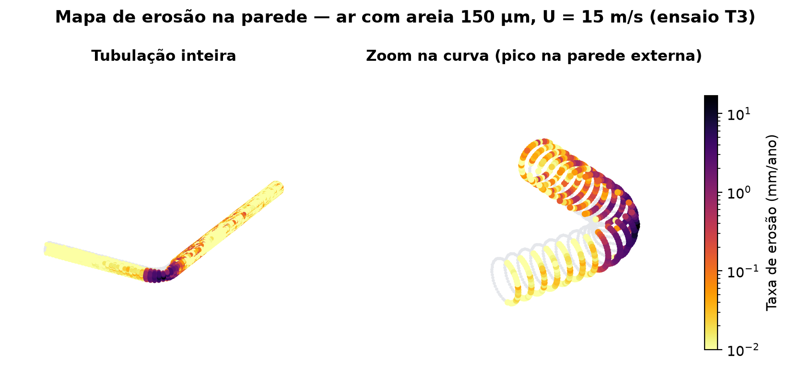

Casos de sucesso · Caso · óleo e gás
Onde e quando a tubulação vai furar
Erosão por areia em curva de 90°: CFD de verdade, validado contra ensaio publicado, e um modelo de IA que responde em milissegundos.
Validado
Objetivo
Partículas sólidas desgastam curvas e conexões até a parede furar. As fórmulas de mão usadas na indústria para estimar quanto e onde a tubulação vai desgastar podem errar por ordens de grandeza, e um estudo de CFD tradicional leva semanas e exige um especialista dedicado. O objetivo do caso foi responder a duas perguntas com o mesmo artefato: onde a parede vai furar primeiro, e com que frequência se pode refazer essa conta quando a vazão muda.
Principais resultados
- A simulação ficou entre 1,05× e 1,49× da erosão medida em laboratório, dentro do critério de aceitação de fator 2. A fórmula de mão, aplicada ao mesmo caso, ficou cerca de 100× abaixo do medido.
- A IA treinada sobre a campanha reproduz a perda de carga com 1,0% de erro em configurações que nunca viu, e a taxa de erosão com 10,6% dentro da faixa de treino — 19,7% fora dela.
- Uma campanha completa custa 1,9 CPU-hora: 32 simulações em 23 minutos, cerca de US$ 0,06. É o que torna viável refazer o mapa a cada mudança de vazão.
O problema: a fórmula de mão não é conservadora, é imprevisível
O desgaste por erosão é dominado pelo ângulo de impacto e pela velocidade local das partículas. Numa curva de 90°, o pico fica na parede externa, logo depois da entrada — uma região de poucos centímetros que concentra a maior parte do dano. Estimativas de mão tratam a curva como um todo e perdem justamente essa concentração.
O padrão da indústria para esse tipo de cálculo é a DNV RP-O501, que exige um campo de escoamento resolvido. Ou seja: para saber onde a parede vai furar, é preciso resolver o escoamento, não estimá-lo.


Um fluxo guiado, do problema ao mapa de erosão
A plataforma descreve o problema em passos — geometria (peça padrão ou CAD do cliente em STL, STEP ou IGES), nível de malha, fluido e partículas —, gera a malha, roda o OpenFOAM com transporte de partículas e modelo de erosão, executa a campanha e treina um modelo de IA sobre os resultados.
Cada número entregue sai acompanhado de um mapa de provas: o que foi simulado, o que foi aprendido, contra o que foi conferido e o que ainda está pendente.
O substituto, conferido contra a simulação e não contra si mesmo
O modelo de IA é treinado sobre a campanha e depois testado em configurações que não estavam nela. O painel abaixo mostra os casos de teste com intervalo de confiança de 95%; em laranja, os que caem fora da faixa de treino, onde o erro sobe de 10,6% para 19,7%.

“As constantes dos modelos de erosão vêm de fonte secundária, por isso a plataforma marca a erosão como PRELIMINAR. O que está provado é a comparação: a simulação fica dentro do fator 2 do ensaio; a fórmula de mão, não.”
Traga o seu caso
Tem uma simulação lenta, cara ou difícil de verificar?
Mande o caso. Respondemos com um escopo fechado e uma métrica de sucesso mensurável, ou dizemos que o método clássico resolve melhor.